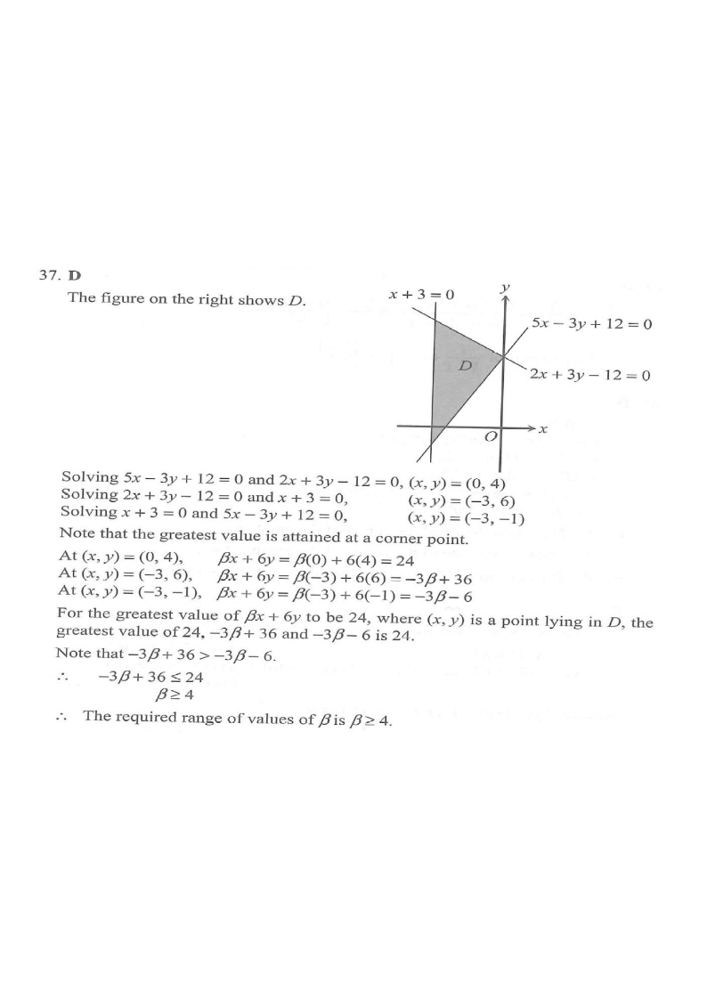

DSE 2023 · 卷二 · 第37題
線性規劃的最大值
不等式 · 線性規劃 · 選擇題
題目
設 $D$ 為以下不等式組所代表的區域：\[ x+3\ge0,\qquad 2x+3y-12\le0,\qquad 5x-3y+12\le0 \]求 $\beta$ 的取值範圍，使 $\beta x+6y$ 的最大值為 $24$，其中 $(x,y)$ 為 $D$ 內的點。
A.
$\beta\le-10$
B.
$\beta\ge-10$
C.
$\beta\le4$
D.
$\beta\ge4$

原題附圖
題解
第 1 步
求區域 $D$ 的頂點
三條邊界：$x=-3$、$2x+3y=12$、$5x-3y=-12$。\[ x=-3\ \text{與}\ 2x+3y=12:\ P(-3,6) \]\[ 2x+3y=12\ \text{與}\ 5x-3y=-12:\ Q(0,4) \]\[ x=-3\ \text{與}\ 5x-3y=-12:\ R(-3,-1) \]$D$ 為三角形 $PQR$。
第 2 步
在頂點計算目標函數
線性規劃
\(\max(\beta x+6y)\ \text{必在頂點取得}\)
目標函數是線性的，最大值出現在可行區域的頂點。
\[ Z(P)=-3\beta+36,\qquad Z(Q)=24,\qquad Z(R)=-3\beta-6 \]
第 3 步
要求最大值等於 $24$
$Q$ 的值恆為 $24$，故只需其餘兩個頂點的值不超過 $24$：\[ -3\beta+36\le24\Rightarrow\beta\ge4 \]\[ -3\beta-6\le24\Rightarrow\beta\ge-10 \]兩者取較強條件，得 $\beta\ge4$。
第 4 步
驗證邊界情況
$\beta=4$ 時 $Z(P)=Z(Q)=24$，整條邊 $PQ$ 都是最大值所在；$\beta>4$ 時 $Z(P)<24$，最大值仍為 $24$。故 $\beta\ge4$，答案 D。
答案
D $\beta\ge4$
練習
同類新題
題目.
在 $x\ge0$、$y\ge0$、$x+y\le4$ 下，求 $2x+3y$ 的最大值。
顯示題解
第 1 步.
頂點 $(0,0)$、$(4,0)$、$(0,4)$
第 2 步.
$2(4)+0=8$；$0+3(4)=12$
答案：最大值 $12$（在 $(0,4)$ 取得）
‹ 上一題
目錄
下一題 ›